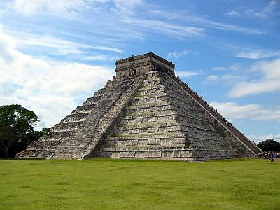

Chichen Itza was a large pre-Columbian city built by the Maya people. The site is located in Yucatan State, Mexico. The city was a major focal point in the northern Maya lowlands from 600 AD to 900 AD. Chichen Itza was one of the largest Maya cities. The city's ruins are federal property and the site's stewardship is maintained by Mexico's National Institute of Anthropology and History. "Chichen Itza" means "At the mouth of the well of the Itza", where Itza is the name of an ethnic-lineage group that gained economic dominance of the northern peninsula.
The final layout of Chichen Itza was developed after 900 AD and the 10th century saw the rise of the city as a regional capital, controlling the area from central Yucatan to the north coast.
Chichen Itza rose to regional prominence towards the end of the Early Classic period (~600 AD). It was however towards the 10th century, that the site became a major capital, centralizing and dominating politcal, sociocultural, economic and ideological life in the norther Maya lowlands. The ascension of Chichcen Itza, roughly correlates with the decline and fragmentation of the major centers of the southern May lowlands.
Archaeological data indicates that Chichen Itza declined as a regional center by 1250. After its elite activities ceased, the place continued to throb with life and this was the state that the Spanish found it in. The Spanish conquered the Yucatan peninsula in 1527 and by 1535, all Spanish had been driven from the peninsula. However, the conquistador Francisco de Montejo, retuned to Yucatan and conquered the peninsula once again. By 1588, Chichen Itza was a working cattle ranch.
Since 1843 up to current times, Chichen Itza has been and is an archaeological excavation site.